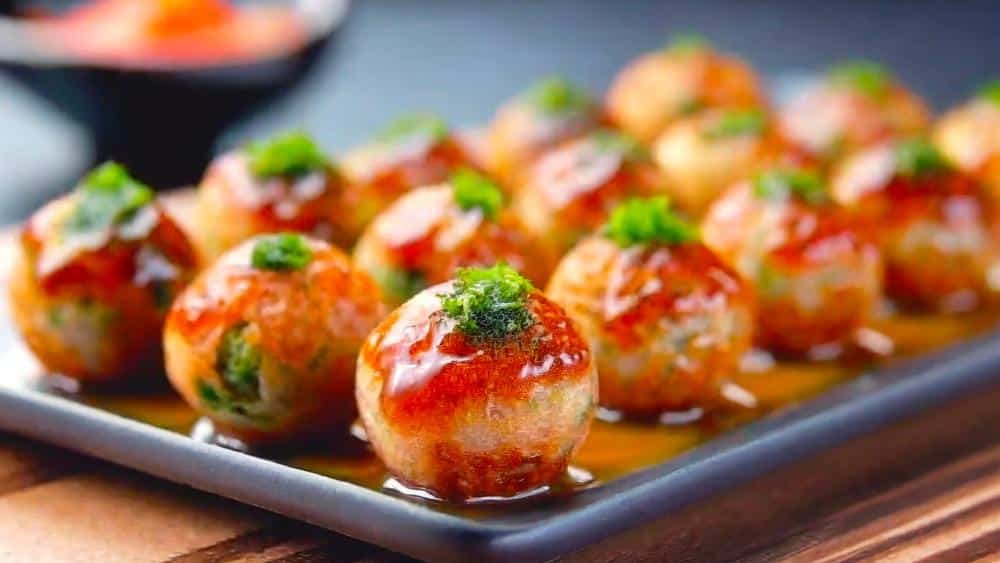
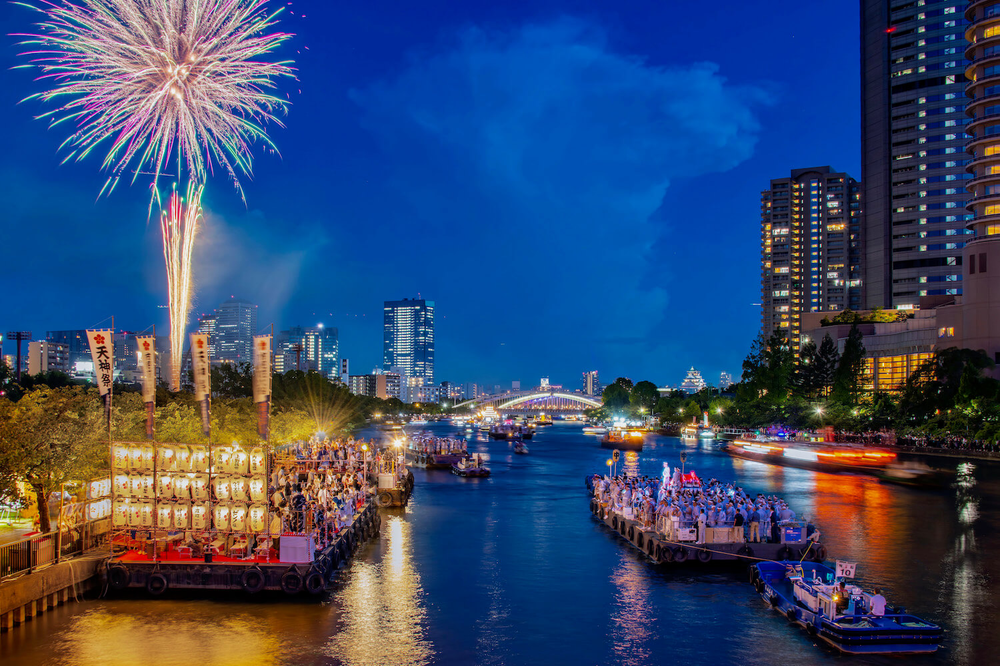

Comida Local
Takoyaki es uno de los platos más populares de Osaka. Son pequeñas bolas de masa rellenas de pulpo,
cocinadas en una plancha especial y acompañadas normalmente con salsa takoyaki, mayonesa, algas y bonito
seco. Es una comida callejera muy representativa de la ciudad.
Takoyaki

Lugares de interés de moda en Osaka
Shinsekai y Tsutenkaku son uno de los lugares más emblemáticos de Osaka. Shinsekai es un barrio tradicional conocido por sus restaurantes,
calles coloridas y ambiente retro, mientras que la Torre Tsutenkaku destaca como su símbolo principal y ofrece vistas panorámicas de la ciudad.
OSAKA

Destacada por su Verano
El ambiente festivo y las atracciones al aire libre ayudan a uno a olvidarse del calor sofocante. El festival más
importante de Osaka es el Tenjin Matsuri, que entusiasma al público, y muchos se dirigen a las playas del sur de
la prefectura. Frecuentes espectáculos de pirotecnia iluminan la noche.
Aspectos destacados por estación